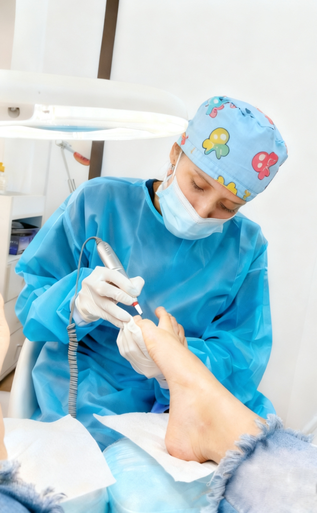

Nuestros Servicios de Podología en Valparaíso
Abordamos la podología con una mirada completa, priorizando la prevención de dolencias y el cuidado profesional de cada pie. Diseñamos cada terapia según tu caso particular, para que recuperes salud, comodidad y un bienestar que perdure con los años.
Clínica de Podología en Valparaíso
Desde nuestra consulta en Valparaíso ejecutamos tratamientos especializados, ya sea para las dolencias más habituales o para aquellos pies que piden un manejo más delicado. Disponemos de tecnología actualizada y aplicamos protocolos de bioseguridad rigurosos, diseñados para resguardarte de comienzo a fin.
Ver Servicios

Spa Médico para Pies en Valparaíso
Combinamos la labor terapéutica con un spa de excelencia en Valparaíso, de modo que cada visita se transforme en un rato especial de relajo y regaloneo. En un entorno de total calma, la podología profesional y el bienestar van de la mano.
Ver ServiciosSalón de Masaje para Pies en Valparaíso
Nos especializamos en masajes de pies en Valparaíso que sueltan la tensión acumulada, activan la circulación y elevan tu sensación de bienestar general. Aplicamos técnicas precisas cuyos beneficios se sienten en todo el cuerpo, comenzando por el cuidado de tus pies.
Ver Servicios